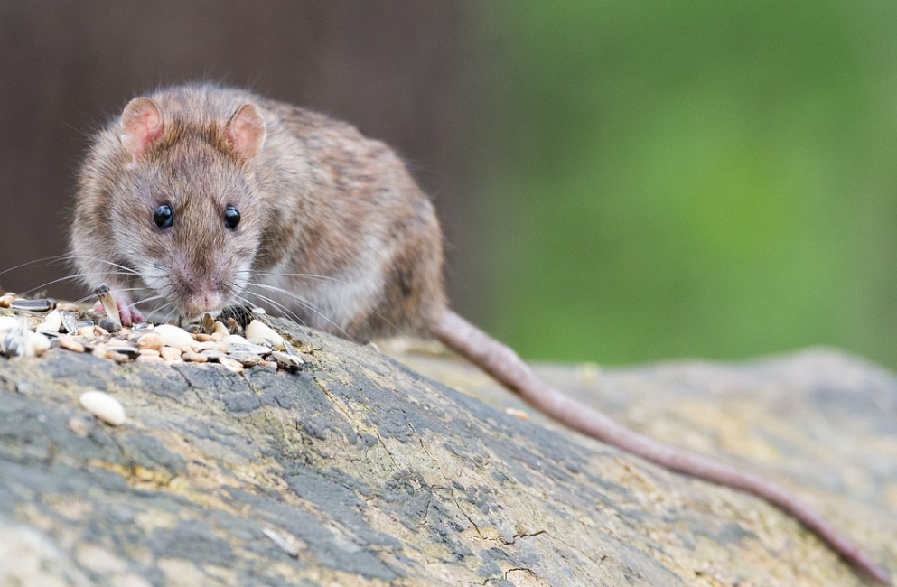

1. Bilder einbinden (<img>)
Variante 1: Standard Bild

Variante 2: Bilder mit fester Breite

Variante 3: Bild mit CSS Klasse

Variante 4: Klickbare Bilder

Variante 5: Bilder mit Beschriftung (<figure>)

Variante 6: Bilder aus dem Web

Variante 7: Responsives Bild
